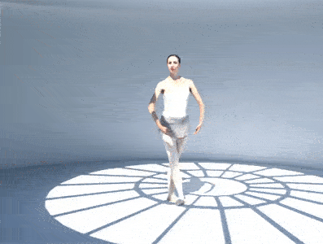

Experiences
Working Experiences
Applied Scientist II at Amazon, Seattle, WA, Jun. 2022 - present
Machine learning on search and ranking, personalization, and softline.
Senior Engineer at DGene Inc., Baton Rouge, LA, Mar. 2021 - Jun. 2022
- 1. Image and Video Inpainting Library:
Present an image and video inpainting library which can be used for several inpainting tasks such as object removal, old movie gate hair removal, and image inpainting. It contains several automatic detectors to generate refined masks for the different objects to be removed including old movie gate hair and other specific objects. It also combines several traditional techniques (like optical flow, Poisson image editing, etc.) and deep learning-based models to fix the videos and images. Collaborated with MTI Film and use the library is used to fix some old movies’ gate hair. Also used this library to fix a movie pilot, Functional Chaos, by Will Shivers, and have credit on that. The library is implemented by C/C++, OpenCV, Eigen, and LibTorch.
 |
 |
- 2. Volumetric Capture:
Present a novel background removal method with a high degree of accuracy in a purpose-built volumetric capture stage, which could record performances and convert them into 3D sequences viewable from any angle. The algorithm beats current state-of-art methods in our situation, combines deep learning and traditional techniques such as joint bilateral upsampling. It is also suitable for small volumetric capture systems such as face dome and object scan. Implement with PyTorch in training and also deliver software using C/C++, OpenCV, and LibTorch. Achieving fast speed with high-resolution output by adopting CUDA programming in the application.
|  |
Postdoctoral Researcher at DGene Inc., Baton Rouge, LA, Sep. 2020 - Mar. 2021
Working on non-rigid registration for continuous meshes. Considering several energy terms such as rigid, non-rigid, smooth, local, and temporal based on the traditional Iterative Closest Point(ICP) method. Using Levenberg-Marquardt algorithm for fast optimization.
Develop a learning-based model to deal with the image super-resolution with ringing artifacts in some old TV shows.
Develop a learning-based model to handle image style transfer between old movies and nowadays ones.
Data Scientist Intern at Particle Media Inc., Mountain View, CA, May. 2019 - Aug. 2019
Mentor: Dr. Ke Zhou
Present a novel outer product-based deep Factorization Machine(FM) that achieves the highest improvements among all the state-of-art baselines on the Click-through Rate(CTR) prediction task.
Present a fast approximate nearest neighbor(ANN) search method based on Hierarchical Navigable Small World(HNSW) algorithm with multilayer perceptron(MLP) distance to make the deep learning based FMs/FFMs applicable to the online serving system.
Apply some recent deep learning-based FMs/FFMs on the News Break App(The No.1 news app on Android and No.2 on iOS in the 2nd quarter of 2019 reported by App Annie with 5M+ daily active users) ForYou datasets(10M instance per day) and evaluate the results which are measured by AUC and test logistic loss.
Professional Services
Program Committee/Reviewer: NeurIPS 2019, EMNLP 2019, ACM Computing Surveys, KDD 2020, ICPR 2020, KDD 2021, Neural Networks, SDM 2022, KDD 2022, KDD 2023
Teaching Assistant Experiences
CSC 1253: Computer Science I with C++, Fall 2016
CSC 1254: Computer Science II with C++, Spring 2017